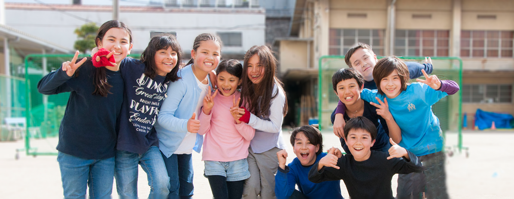

Parcoursup est la nouvelle plateforme nationale d’admission en première année des formations de l’enseignement supérieur.
Cette plateforme permet aux lycéens, apprentis ou étudiants en réorientation qui souhaitent entrer dans l’enseignement supérieur à la rentrée 2018, de se préinscrire, de déposer leurs voeux de poursuite d’études et de répondre aux propositions d’admission des établissements dispensant des formations de l’enseignement supérieur (Licences, STS, IUT, CPGE, écoles d’ingénieurs, etc.).
La formulation des voeux sur Parcoursup débute le 22 Janvier 2018 et pourra se faire jusqu’au 13 Mars 2018 18H00.
«Parcoursup» : https://www.parcoursup.fr/
